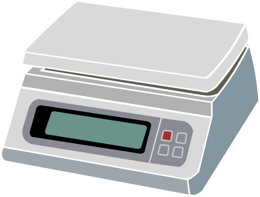
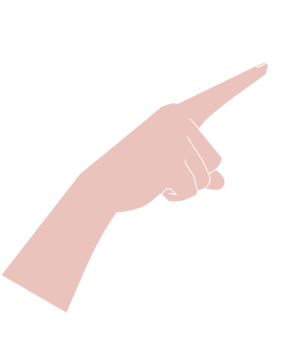

Follow along the instructions, tick along the instruction box to continue the calibration progress.
Turns on your digitial scale and make sure the digital scale reading is at precisely 0.00 gram, if it wasn't please tare it.
Place your standard mass (M) of 500gr on top of the scale, and please input the scale's mass reading below (use "." as the decimal seperator):
Slightly touch (pan) your finger on top of the standard mass that were on the scale for 30 seconds, then release your finger (use stopwach for this).
Please input your scale mass reading after the 30 seconds pan
Take away your mass on the scale, wait for about 5 seconds, please input your 0's scale reading (along with the decimal point) after removing the standard mass
Place your standard mass (M) of 500gr on top of the scale, and please input the scale's mass reading below (use "." as the decimal seperator):
Slightly touch (pan) your finger on top of the standard mass that were on the scale for 30 seconds, then release your finger (use stopwach for this).
Please input your scale mass reading after the 30 seconds pan
Take away your mass on the scale, wait for about 5 seconds, please input your 0's scale reading (along with the decimal point) after removing the standard mass